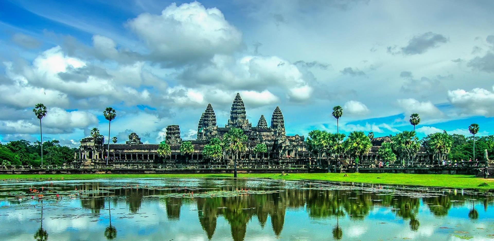

Siem Reap, officially Siemreap[3] (Khmer: សៀមរាប [siəm riəp], lit. 'Siam's Defeated'), is a province (khaet) of Cambodia. It borders the provinces of Oddar Meanchey to the north, Preah Vihear and Kampong Thom to the east, Battambang to the south, and Banteay Meanchey to the west. Its capital and largest city is Siem Reap. Siem Reap province is the tenth largest province in Cambodia. Having reached a population of one million in 2019, it ranks as the nation's fourth most populous province. A large portion of Siem Reap province's southern border is demarcated by the Tonle Sap and as such, it is one of the nine provinces that making up the Tonle Sap Biosphere Reserve. In modern times the province is best known as the site of Angkor and the Angkor Wat temple ruins, a UNESCO World Heritage Site. It is also the home of Banteay Srei, Roluos (temples), the UNESCO tentative site of Beng Mealea, and the UNESCO tentative site of Phnom Kulen National Park, home to the country's largest reclining Buddha
